I've been putting off buying most of my dolls wigs for years... like a lot of them. So when I had collected a stupid number of dolls, it was going to be extra painful to buy them all shoes and wigs. Luts was having a discount sale on what I needed, so I made an order. Shipping was more ridiculous than I expected, even in times of "the troubles".
Order date: March 9, Shipping date: March 13
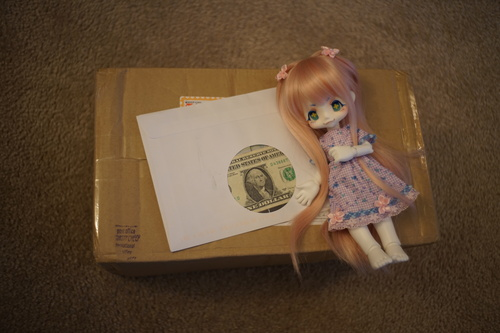The box arrived and I was not in a good mood to see the box wasn't huge or heavy. The EMS label on the box listed the shipping cost, which was 79900 won, which currently is equivalent to about $61. This is significantly less than I was charged. Also arrived in the mail: a mysterious dollar bill.
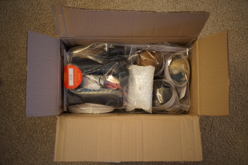 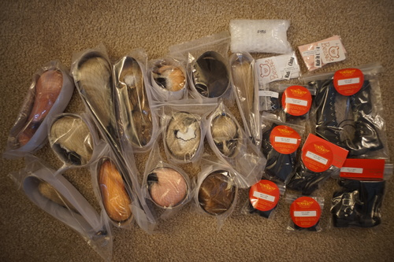I ordered two pairs of eyes, one for Cheby and one for Verona.
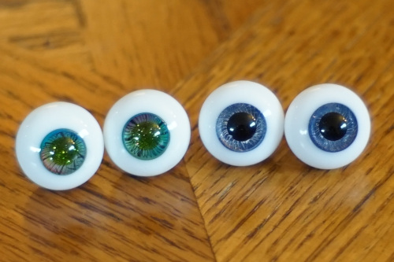14MM S GLASS EYES NO037 - The threading isn't consistent patternwise though both eyes. Not really a big problem. But, my big issue is in fact that the pupils are green!! I can kind of see how I made this mistake from the listing, but it isn't obvious. Don't buy these eyes if you want black or even dark pupils. These were intended for Verona, but I put them in Anya.
14MM S GLASS EYES NO001 - These eyes have slightly off center pupils, which aren't so off they can't be hidden. The threading is a shiny silver. I bought them for Cheby, but he looked too kind, so I put them in Verona. Cheby is wearing them in all the wig modeling photos.
According to Luts, all of these shoes are leather. We'll know in 10 years. When picking out shoes, you can post on their Q&A board and they will tell you if leather or nonleather. Only black and brown shoes I chose were leather, no white or pink. One pair of black shoes was not leather and material is not consistent through colors of the same style. 3 pairs of these shoes are "brown", believe it or not.
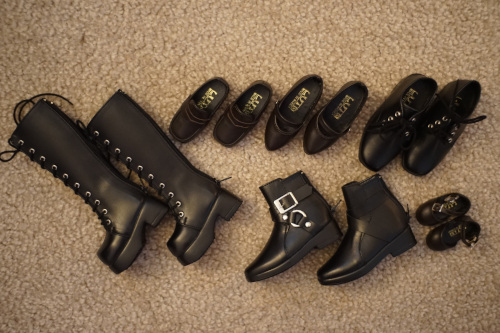All of the shoes have little prick marks in the soles. They're not seen when worn. The stitch marks are not perfect on any shoe. There were smudge marks on many shoes and their soles aren't completely smooth.
HDS 07 Brown - Very close to black. They do not fit Kiki, if you are curious.
MGS 01 Black - Did not arrive. MBS 01 arrived instead.
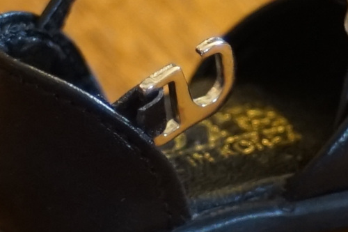KDS 23 Black - The clip connector(?) on one shoe is already half detached. The other shoe is fine.
KDS 46 Brown - These are as close as black as you can get while saying brown.
DGS 13 SWEET FLORET For GIRL Brown - Also very dark brown.
DGS 07 LONG BOOTS For Girl Black - Too bad these aren't in style anymore. There's a little loop for the laces on the tongue.
SBS 14 CROSS OVER Boy Black - Sloppy stitching is their worst sin.
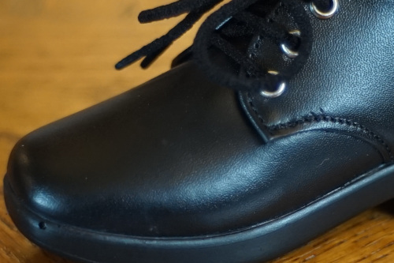SBS 06 DRESS SHOES Boy Black - Someone went off the lines when stitching one of these and had to redo it. There's a bubble in the sole. The laces are made of the material disposable mask straps use. Feels cheap but you don't have to unlace them to get them on.
SDF Basic Over Knee socks Pink and SDF Basic Over Knee socks White - I ordered socks because I don't own a serger to make them with. Whoever made these also does not have a serger. Unfortunate.
I saved the best for last and I'm thankful I did because my mood was abyssmal by this point. Luts has nice wigs! Cheby and rare pepe Grassy are our models today. Grassy was not so cooperative and started losing eyelashes over it.
ALL caps are light tan. Definitely check out Luts if you are buying for vinyl.
TDW 011 Natural Blond - I don't have the twins to try them on, so no review yet. I bought 2.
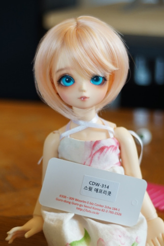 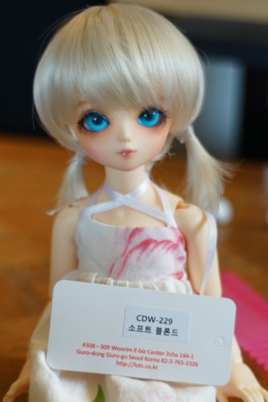CDW 229 Soft blond - Bought for Anya. The ponytails are not split in the back, just extra long pieces.
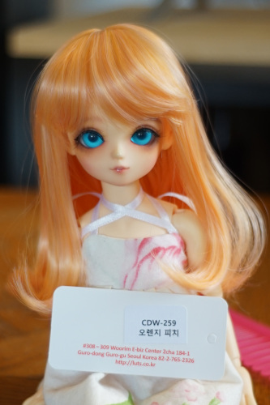CDW 259 Orange Peach - Both sides fwoop in the same direction.
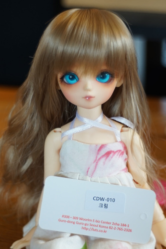CDW 010 Cream - I bought this for Hikari, but I was going to give it to Grassy after seeing how cute it is... but then Hikari looked even cuter so it's still hers.
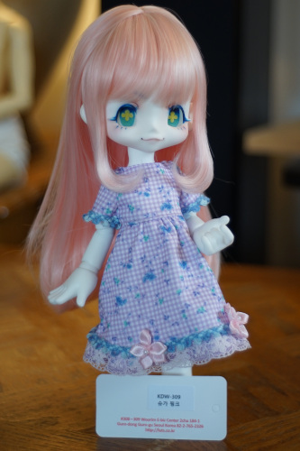KDW 309 Sugar Pink - Bought for Praline. The cap is super small. I can get it on her, but it does not cover as much area as her previous (also luts) wig.
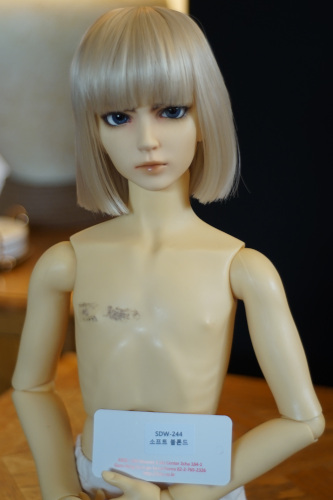SDW 244 Soft Blond - Move over, Howl!! It's for Hina. So much more manageable than her beautiful curls.
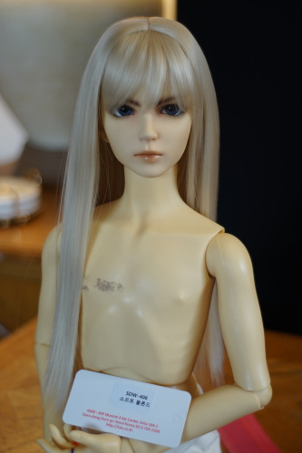SDW 406 Soft Blonde - I bought this for Rio, with giving it to Hina being a back up plan. It is too small for Hina, so Rio is going to make it work.
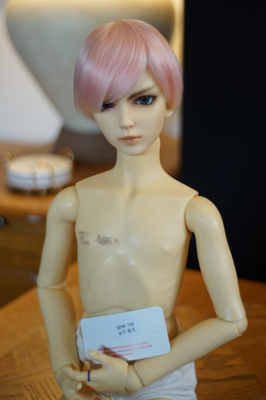SDW 130 Sugar Pink - I couldn't decide if I wanted Verona to continue being pink or go blonde, which was my original plan for him.
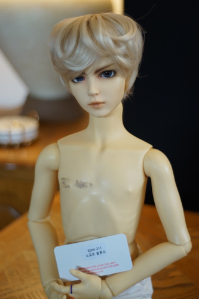SDW 211 Soft Blond - So I bought him wigs in both colors. This wig does not fit on Hina.
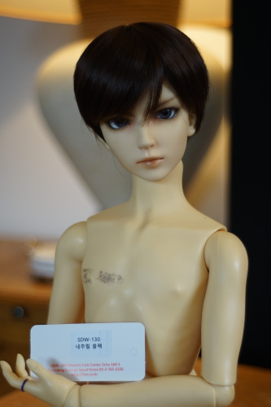SDW 130 Natural Black - Purchased for Cheby. Makes him look hireable. Weird.
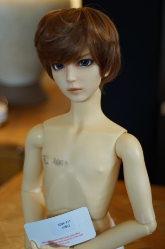SDW 211 Sienna - Bought for Liam. I can't tell if I like it on Liam or not ;____; I'm so used to the faux fur he just looks weird.
Both V wigs. I think he looks cute in both!
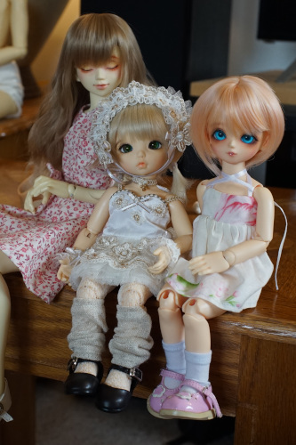All 6-7 wearers. Anya has new eyes and shoes as well. Hikari looks so cute in that wig. I love it on her.
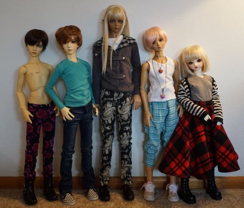All largies. Cheby, Rio, and Hina are all sporting new shoes. Why doesn't Cheby have a shirt? Hina is wearing it. Liam looks so different now! ;______; I hope I get used to it.
The total was $525 USD, including $93 in shipping. I'm still in pain. I have not yet contacted Luts about the missing and broken items, as well as the $30 overcharge. I will update with the results.
March 21 update: Luts says it is impossible to give a partial refund over Paypal, so they are refunding $32 in points. They apologized for the wrong shoes, and are sending new ones. They do not believe the defective shoes are defective, and that it is part of the design. I sent another photo to clarify that they are. The language barrier is rough to explain this one and it doesn't help the shoes are black so you can't see anything. Ryan says Liam looks like a Korean twink now.
March 22 update: Luts is sending both shoes. Tracking number is "."? Hopefully they'll show up in a week or two.